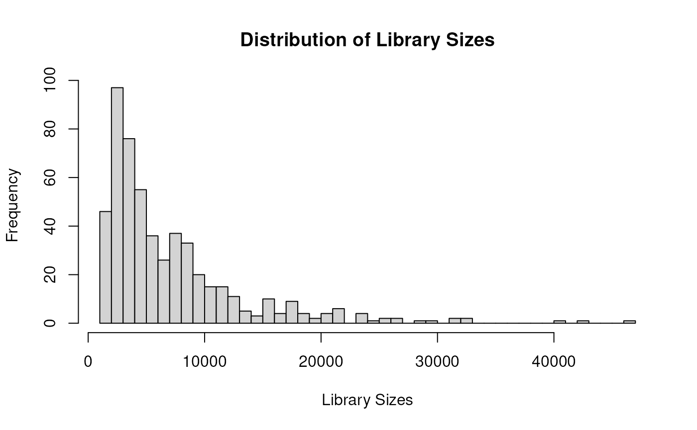
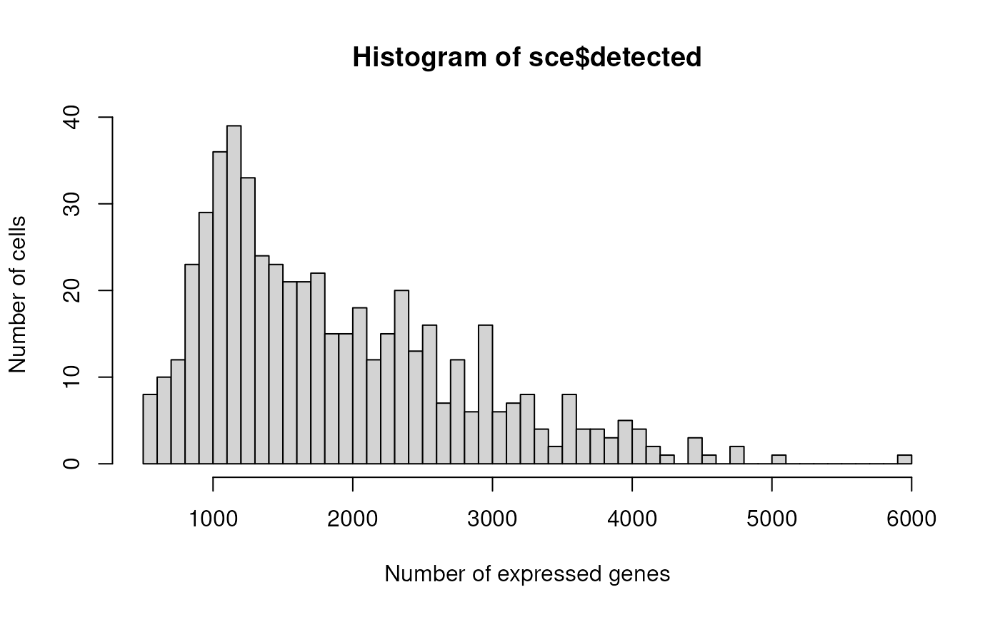
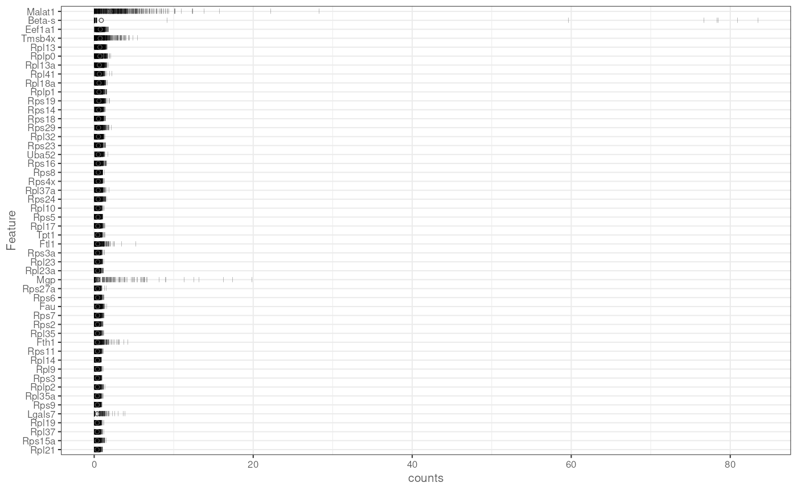
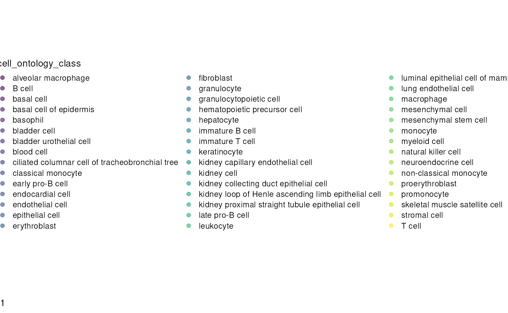
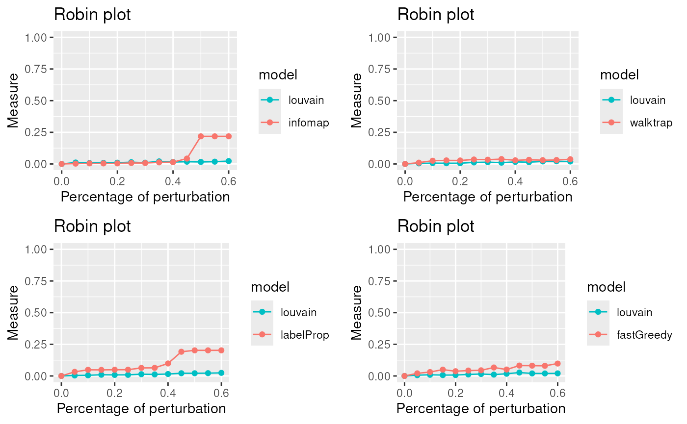
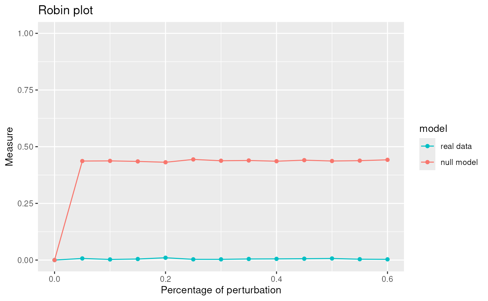
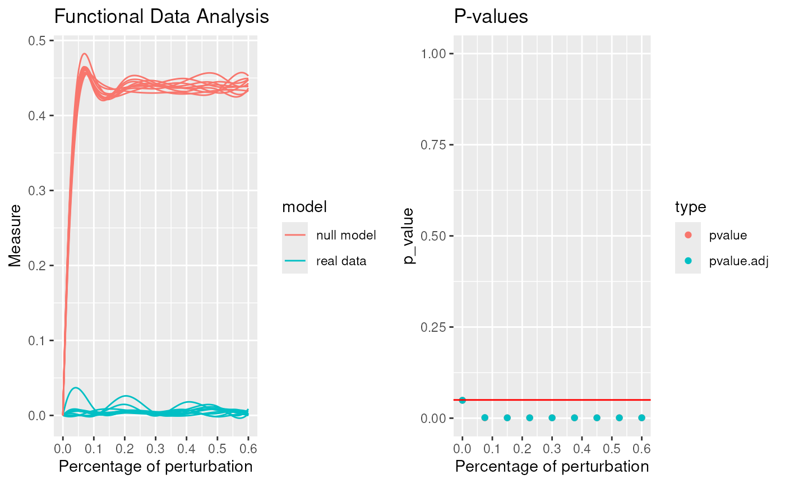
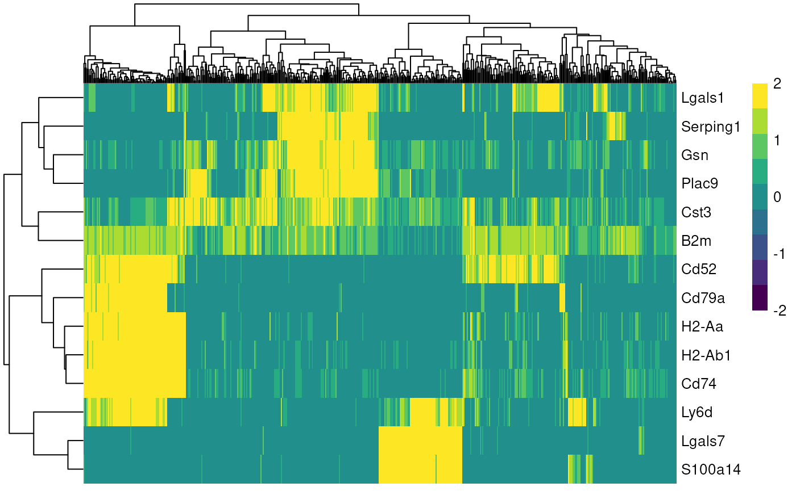

vignettes/OSCATabulaMuris.Rmd
OSCATabulaMuris.RmdThis document provides an analysis pipeline for Tabula Muris data using various R packages for single-cell RNA sequencing. Each chunk is annotated with a description of its purpose.
The following libraries are loaded for data quality control, visualization, and analysis:
# Load necessary libraries for single-cell RNA-seq analysis
library(scater) # Data quality control and visualization
library(M3Drop) # Implements feature selection methods
library(Seurat) # Complete data analysis: QC, clustering, and exploration
library(mclust) # Metrics for clustering validation
library(scran) # Data preprocessing and normalization
library(SC3) # Clustering of scRNAseq data
library(SingleCellExperiment) # Core class for single-cell data
library(BiocParallel) # Parallel computation
library(HDF5Array) # Efficient storage and retrieval of HDF5 files
library(igraph)
library(robin)
# Read data
# datav2 <- system.file("extdata", "filtered_tabulamuris_mtx.rds", package="scrobinv2")
datav2 <- get_data_path("filtered_tabulamuris_mtx.rds")
tabData <- readRDS(file=datav2)
# Read cell metadata
# inf <- system.file("extdata", "tabulamuris_cell_info.rds", package = "scrobinv2")
inf <- get_data_path("tabulamuris_cell_info.rds")
info1 <- readRDS(inf)
info <- subset(info1, id %in% colnames(tabData))
dim(info)## [1] 532 7Combine the data into a SingleCellExperiment object for downstream analysis:
# Create a SingleCellExperiment object
wrkrs <- 15 # Number of workers for parallelization
match_order <- match(colnames(tabData), rownames(info))
info <- info[match_order, ]
sce <- SingleCellExperiment(assays = list(counts = tabData), colData = info)Add quality control metrics to the SingleCellExperiment object:
# Perform quality control and visualize cell metrics
sce <- addPerCellQC(sce)
hist(sce$total, breaks = 50, xlab = "Library Sizes", main = "Distribution of Library Sizes")
hist(sce$detected, xlab="Number of expressed genes", breaks=50, ylab="Number of cells")
plotHighestExprs(sce, exprs_values = "counts")
Filter genes based on their average expression levels to exclude non-informative features.
# Calculate average counts for each gene and filter out genes with zero average expression
rowData(sce)$ave.counts <- calculateAverage(sce, exprs_values = "counts", BPPARAM = MulticoreParam(workers = wrkrs))
to.keep <- rowData(sce)$ave.counts > 0
sce <- sce[to.keep, ]
summary(to.keep) # Summary of genes kept## Mode FALSE TRUE
## logical 3571 16183
dim(sce) # Dimensions of the filtered SingleCellExperiment object## [1] 16183 532Normalize the data using scran’s computeSumFactors and log-normalization for downstream analysis.
# Compute size factors and normalize counts
set.seed(1000)
clusters <- quickCluster(sce, BPPARAM = MulticoreParam(workers = wrkrs))
sce <- computeSumFactors(sce, cluster = clusters, BPPARAM = MulticoreParam(workers = wrkrs))
sce <- logNormCounts(sce)Model variance to identify highly variable genes for downstream analysis.
# Model variance and identify the top highly variable genes
set.seed(1001)
dec <- modelGeneVarByPoisson(sce, BPPARAM = MulticoreParam(workers = wrkrs))
top <- getTopHVGs(dec, prop = 0.1)Perform PCA, t-SNE, and UMAP for dimensionality reduction to visualize the data in lower-dimensional spaces.
# Perform PCA and reduce dimensions using t-SNE and UMAP
set.seed(10000)
sce <- denoisePCA(sce, subset.row = top, technical = dec, BPPARAM = MulticoreParam(workers = wrkrs))
ncol(reducedDim(sce)) # Number of principal components used## [1] 18
set.seed(100000)
sce <- runTSNE(sce, dimred = "PCA")
set.seed(1000000)
sce <- runUMAP(sce, dimred = "PCA")
plotReducedDim(sce, dimred = "UMAP", colour_by = "cell_ontology_class") # Plot UMAP
Construct a shared nearest neighbor (SNN) graph based on PCA-reduced dimensions.
# Build a shared nearest neighbor (SNN) graph
graph <- buildSNNGraph(sce, k = 25, use.dimred = 'PCA') # k=25 neighborsEvaluate different clustering methods using robin
# Simplify the graph and evaluate clustering methods
graph <- igraph::simplify(graph) # Simplify the graph by removing duplicate edgesWe apply the compare procedure to see which is the algorithm that better fits our network.
library(robin)
graph <- prepGraph(graph, file.format="igraph")
#Infomap
comp_I <- robinCompare(graph=graph, method1="louvain",
method2="infomap")## [1] "Weighted Network Parallel Function"
## Detected robin method type independent
## It can take time ... It depends on the size of the network.
plot1 <- plot(comp_I)
#Walktrap
comp_W <- robinCompare(graph=graph, method1="louvain",
method2="walktrap")## [1] "Weighted Network Parallel Function"
## Detected robin method type independent
## It can take time ... It depends on the size of the network.
plot2 <- plot(comp_W)
#LabelProp
comp_La <- robinCompare(graph=graph, method1="louvain",
method2="labelProp") # use leiden## [1] "Weighted Network Parallel Function"
## Detected robin method type independent
## It can take time ... It depends on the size of the network.
plot3 <- plot(comp_La)
#Fastgreedy
comp_F <- robinCompare(graph=graph, method1="louvain",
method2="fastGreedy")## [1] "Weighted Network Parallel Function"
## Detected robin method type independent
## It can take time ... It depends on the size of the network.
plot4 <- plot(comp_F)
PlotComparisonAllVsInfomap <- gridExtra::grid.arrange(plot1,plot2,plot3,plot4, ncol=2)
The lowest curve is the most stable algorithm. Louvain and Walktrap are the best algorithms in our example.
Due to the fact that Louvain is one of the best algorithm for our network we apply the robust procedure with the Louvain algorithm to see if the communities detected are statistically significant.
graphRandom <- random(graph=graph)
proc <- robinRobust(graph=graph, graphRandom=graphRandom, method="louvain")## [1] "Weighted Network Parallel Function"
## Detected robin method type independent
## It can take time ... It depends on the size of the network.
plot(proc)
robinFDATest(proc)## [1] "First step: basis expansion"
## Swapping 'y' and 'argvals', because 'y' is simpler,
## and 'argvals' should be; now dim(argvals) = 13 ; dim(y) = 13 x 20
## [1] "Second step: joint univariate tests"
## [1] "Third step: interval-wise combination and correction"
## [1] "creating the p-value matrix: end of row 2 out of 9"
## [1] "creating the p-value matrix: end of row 3 out of 9"
## [1] "creating the p-value matrix: end of row 4 out of 9"
## [1] "creating the p-value matrix: end of row 5 out of 9"
## [1] "creating the p-value matrix: end of row 6 out of 9"
## [1] "creating the p-value matrix: end of row 7 out of 9"
## [1] "creating the p-value matrix: end of row 8 out of 9"
## [1] "creating the p-value matrix: end of row 9 out of 9"
## [1] "Interval Testing Procedure completed"
## TableGrob (1 x 2) "arrange": 2 grobs
## z cells name grob
## 1 1 (1-1,1-1) arrange gtable[layout]
## 2 2 (1-1,2-2) arrange gtable[layout]## $adj.pvalue
## [1] 0.0490 0.0016 0.0010 0.0010 0.0010 0.0010 0.0010 0.0010 0.0011
##
## $pvalues
## [1] 0.049 0.001 0.001 0.001 0.001 0.001 0.001 0.001 0.001
robinGPTest(proc)## Profile 1
## Profile 2## [1] 53.53411The communities given by Louvain are statistically significant.
table(membershipCommunities (graph=graph, method="louvain"))##
## 1 2 3 4 5 6
## 73 133 111 91 75 49Once we found the best clustering algorithm, we can use the found communities for identifying marker genes, to subsequently find cell types.
mc <- membershipCommunities(graph=graph, method="louvain")
sce$louvain <- mc
markers <- findMarkers(sce, groups=sce$louvain)
marker_genes <- unique(unlist(lapply(markers, function(m) head(rownames(m), 5))))
plotHeatmap(
sce,
features = marker_genes,
columns_by = "louvain",
exprs_values = "logcounts",
scale = TRUE,
centre = TRUE,
zlim = c(-2, 2)
)
## R version 4.4.2 (2024-10-31)
## Platform: x86_64-pc-linux-gnu
## Running under: Ubuntu 24.04.1 LTS
##
## Matrix products: default
## BLAS: /usr/lib/x86_64-linux-gnu/openblas-pthread/libblas.so.3
## LAPACK: /usr/lib/x86_64-linux-gnu/openblas-pthread/libopenblasp-r0.3.26.so; LAPACK version 3.12.0
##
## locale:
## [1] LC_CTYPE=en_US.UTF-8 LC_NUMERIC=C
## [3] LC_TIME=en_US.UTF-8 LC_COLLATE=en_US.UTF-8
## [5] LC_MONETARY=en_US.UTF-8 LC_MESSAGES=en_US.UTF-8
## [7] LC_PAPER=en_US.UTF-8 LC_NAME=C
## [9] LC_ADDRESS=C LC_TELEPHONE=C
## [11] LC_MEASUREMENT=en_US.UTF-8 LC_IDENTIFICATION=C
##
## time zone: Etc/UTC
## tzcode source: system (glibc)
##
## attached base packages:
## [1] stats4 stats graphics grDevices utils datasets methods
## [8] base
##
## other attached packages:
## [1] robin_2.0.0 igraph_2.1.4
## [3] HDF5Array_1.34.0 rhdf5_2.50.2
## [5] DelayedArray_0.32.0 SparseArray_1.6.2
## [7] S4Arrays_1.6.0 abind_1.4-8
## [9] Matrix_1.7-4 BiocParallel_1.40.2
## [11] SC3_1.34.0 scran_1.34.0
## [13] mclust_6.1.1 Seurat_5.3.0
## [15] SeuratObject_5.2.0 sp_2.2-0
## [17] M3Drop_1.32.0 numDeriv_2016.8-1.1
## [19] scater_1.34.1 ggplot2_3.5.2
## [21] scuttle_1.16.0 SingleCellExperiment_1.28.1
## [23] SummarizedExperiment_1.36.0 Biobase_2.66.0
## [25] GenomicRanges_1.58.0 GenomeInfoDb_1.42.3
## [27] IRanges_2.40.1 S4Vectors_0.44.0
## [29] BiocGenerics_0.52.0 MatrixGenerics_1.18.1
## [31] matrixStats_1.5.0
##
## loaded via a namespace (and not attached):
## [1] gld_2.6.7 nnet_7.3-20 goftest_1.2-3
## [4] rstan_2.32.7 vctrs_0.6.5 spatstat.random_3.4-1
## [7] perturbR_0.1.3 digest_0.6.37 png_0.1-8
## [10] proxy_0.4-27 Exact_3.3 pcaPP_2.0-5
## [13] ggrepel_0.9.6 deldir_2.0-4 parallelly_1.45.1
## [16] hdrcde_3.4 MASS_7.3-65 pkgdown_2.1.3
## [19] reshape2_1.4.4 httpuv_1.6.16 foreach_1.5.2
## [22] withr_3.0.2 xfun_0.53 survival_3.8-3
## [25] doRNG_1.8.6.2 ggbeeswarm_0.7.2 systemfonts_1.2.3
## [28] ragg_1.5.0 networkD3_0.4.1 zoo_1.8-14
## [31] gtools_3.9.5 V8_7.0.0 pbapply_1.7-4
## [34] DEoptimR_1.1-4 Formula_1.2-5 promises_1.3.3
## [37] httr_1.4.7 globals_0.18.0 fitdistrplus_1.2-4
## [40] rhdf5filters_1.18.1 rstudioapi_0.17.1 UCSC.utils_1.2.0
## [43] miniUI_0.1.2 generics_0.1.4 base64enc_0.1-3
## [46] curl_7.0.0 zlibbioc_1.52.0 ScaledMatrix_1.14.0
## [49] polyclip_1.10-7 GenomeInfoDbData_1.2.13 xtable_1.8-4
## [52] stringr_1.5.1 desc_1.4.3 pracma_2.4.4
## [55] doParallel_1.0.17 evaluate_1.0.5 hms_1.1.3
## [58] irlba_2.3.5.1 colorspace_2.1-1 ROCR_1.0-11
## [61] reticulate_1.43.0 readxl_1.4.5 spatstat.data_3.1-8
## [64] magrittr_2.0.3 lmtest_0.9-40 readr_2.1.5
## [67] later_1.4.4 viridis_0.6.5 lattice_0.22-7
## [70] spatstat.geom_3.5-0 future.apply_1.20.0 robustbase_0.99-6
## [73] scattermore_1.2 cowplot_1.2.0 RcppAnnoy_0.0.22
## [76] class_7.3-23 Hmisc_5.2-3 pillar_1.11.0
## [79] StanHeaders_2.32.10 nlme_3.1-168 iterators_1.0.14
## [82] caTools_1.18.3 compiler_4.4.2 beachmat_2.22.0
## [85] RSpectra_0.16-2 stringi_1.8.7 DescTools_0.99.60
## [88] tensor_1.5.1 plyr_1.8.9 fda_6.3.0
## [91] crayon_1.5.3 locfit_1.5-9.12 haven_2.5.5
## [94] rootSolve_1.8.2.4 dplyr_1.1.4 codetools_0.2-20
## [97] textshaping_1.0.3 BiocSingular_1.22.0 bslib_0.9.0
## [100] QuickJSR_1.8.0 e1071_1.7-16 lmom_3.2
## [103] fds_1.8 plotly_4.11.0 mime_0.13
## [106] splines_4.4.2 Rcpp_1.1.0 fastDummies_1.7.5
## [109] sparseMatrixStats_1.18.0 cellranger_1.1.0 knitr_1.50
## [112] reldist_1.7-2 WriteXLS_6.8.0 fs_1.6.6
## [115] listenv_0.9.1 checkmate_2.3.3 pkgbuild_1.4.8
## [118] expm_1.0-0 tibble_3.3.0 statmod_1.5.0
## [121] tzdb_0.5.0 pkgconfig_2.0.3 pheatmap_1.0.13
## [124] tools_4.4.2 cachem_1.1.0 viridisLite_0.4.2
## [127] fastmap_1.2.0 rmarkdown_2.29 scales_1.4.0
## [130] grid_4.4.2 ica_1.0-3 sass_0.4.10
## [133] FNN_1.1.4.1 patchwork_1.3.2 dotCall64_1.2
## [136] RANN_2.6.2 rpart_4.1.24 farver_2.1.2
## [139] mgcv_1.9-3 yaml_2.3.10 deSolve_1.40
## [142] foreign_0.8-90 cli_3.6.5 purrr_1.1.0
## [145] lifecycle_1.0.4 askpass_1.2.1 uwot_0.2.3
## [148] rainbow_3.8 mvtnorm_1.3-3 bluster_1.16.0
## [151] backports_1.5.0 gtable_0.3.6 ggridges_0.5.7
## [154] densEstBayes_1.0-2.2 progressr_0.15.1 parallel_4.4.2
## [157] limma_3.62.2 jsonlite_2.0.0 edgeR_4.4.2
## [160] RcppHNSW_0.6.0 bitops_1.0-9 Rtsne_0.17
## [163] spatstat.utils_3.1-5 BiocNeighbors_2.0.1 RcppParallel_5.1.11-1
## [166] bdsmatrix_1.3-7 jquerylib_0.1.4 metapod_1.14.0
## [169] dqrng_0.4.1 loo_2.8.0 spatstat.univar_3.1-4
## [172] rrcov_1.7-7 lazyeval_0.2.2 shiny_1.11.1
## [175] htmltools_0.5.8.1 sctransform_0.4.2 formatR_1.14
## [178] data.tree_1.2.0 glue_1.8.0 spam_2.11-1
## [181] XVector_0.46.0 RCurl_1.98-1.17 qpdf_1.4.1
## [184] ks_1.15.1 gridExtra_2.3 boot_1.3-32
## [187] R6_2.6.1 tidyr_1.3.1 fdatest_2.1.1
## [190] gplots_3.2.0 forcats_1.0.0 labeling_0.4.3
## [193] cluster_2.1.8.1 rngtools_1.5.2 bbmle_1.0.25.1
## [196] Rhdf5lib_1.28.0 rstantools_2.5.0 tidyselect_1.2.1
## [199] vipor_0.4.7 htmlTable_2.4.3 inline_0.3.21
## [202] future_1.67.0 rsvd_1.0.5 KernSmooth_2.23-26
## [205] data.table_1.17.8 htmlwidgets_1.6.4 RColorBrewer_1.1-3
## [208] rlang_1.1.6 spatstat.sparse_3.1-0 spatstat.explore_3.5-2
## [211] beeswarm_0.4.0